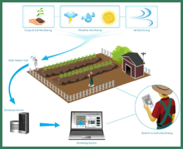
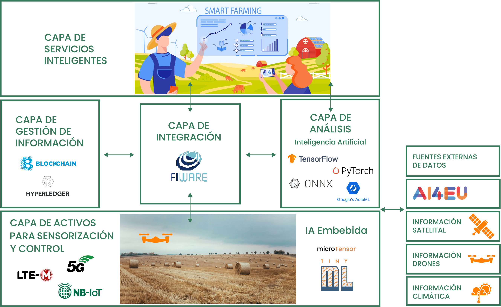

SOBRE PERSEO

En la región del Mediterráneo, la agricultura de regadío aporta el 75% de la producción final. Existe la necesidad de tecnologías TIC que aumenten la eficiencia del uso del agua y pongan a disposición fuentes de agua adicionales (no convencionales) para fertilización e irrigación, disminuyendo así la escasez de agua y la descarga de agua y nutrientes al medio ambiente. Esto se puede conseguir a través de lo que se denominan técnicas de Agricultura de Precisión (como muestra la figura).
Se están desarrollando rápidamente métodos de riego precisos para ahorrar agua y, al mismo tiempo, mejorar los rendimientos y la calidad de la producción agrícola. Aunque el riego se ha practicado durante siglos, el riego de precisión es un tema nuevo ya que el sector tuvo que responder a las demandas sociales de reducciones en la asignación de agua y mejoras en la eficiencia. Se ha demostrado que las estrategias de riego de precisión aumentan con éxito la eficiencia en el uso del agua. Por lo tanto, la tendencia actual del manejo del riego de cultivos de precisión y ferti-irrigación con el uso de información basada en indicadores medibles, así como análisis e interpretación de los datos recolectados para el desarrollo de sistemas de ayuda a los agricultores en la toma de decisiones eficientes del riego y fertilización. Además, debemos de sumar a lo anterior el impacto económico que tiene en las empresas agrícolas, los daños producidos por plagas y enfermedades de los cultivos, que hace necesario incorporar tecnologías que detecten estas situaciones de forma más temprana posible. Para estos casos, se hace necesario planificar y hacer un uso más eficiente (para minimizar su uso y el posible impacto sobre los cultivos) tanto de pesticidas como de tratamientos fitosanitarios en los cultivos.
Finalmente, haciendo cuenta del cliente final, que cada vez muestra un mayor interés por su alimentación, procedencia, tratamientos, impacto medioambiental que produce, etc. necesitamos proveer de herramientas tecnológicas que ayuden a realizar una trazabilidad fiable del ciclo de vida de los productos perecederos que monitoricen y certifiquen los parámetros de calidad de dichos productos desde el campo hasta la mesa.
El proyecto PERSEO es clave para desarrollar y proporcionar innovaciones tecnológicas para que las empresas agrícolas especialmente las nacionales sean cada vez más sostenibles y competitivas en el mercado globalizado. Aquí es donde cobran relevancia las tecnologías digitales habilitadoras como la Inteligencia Artificial (IA) y Internet of Things (IoT), las cuales posibilitan soluciones demandadas por pymes y grandes empresas del sector agrícola.

En concreto, el IoT permite una familia de tecnologías de comunicación capaz de ofrecer muchas soluciones para la modernización de la agricultura. Recientemente, el mundo de IoT incluye las redes 5G (LTE-M y NB-IoT) para permitir dispositivos inalámbricos y autónomos para monitoreo y control sin costosos enrutadores o repetidores en zonas rurales sin conectividad 3G/4G. Dichos dispositivos IoT permiten la interacción con las instalaciones de cultivo para realizar una adquisición de datos precisa (planta, suelo y medio ambiente) y también actuaciones remotas mejoradas sobre las bombas de nutrición. válvulas de riego, etc. Por otro lado, nuevas técnicas de interfaces Hombre Máquina (HMI) facilitarán incorporar datos agrícolas que actualmente se anotan en cuadernos manuales de campo para permitir su procesamiento digital. Además, la trazabilidad segura de la calidad de los productos agrícolas puede ser conseguida mediante el almacenamiento de datos monitorizados y gestión de cadenas de bloques inmutables mediante la tecnología de Blockchain. Finalmente, el análisis de todos los datos provenientes de IoT y HMI permite interpretar y extrapolar conocimiento sobre procesos complejos, predecir situaciones y mejorar los sistemas de apoyo a la decisión a través de la tecnología de Inteligencia Artificial (IA).
Tanto agricultores como el planeta pueden beneficiarse del impacto socioeconómico de dichas tecnologías sobre los procesos agrícolas y medio ambientales. Es un gran incentivo, ya que los agricultores podrán realizar un consumo más eficiente de los recursos naturales, en especial del agua potable. El agua es uno de los recursos naturales que más se consumen pero que menos se cuidan y preservan. Esto será posible gracias a los despliegues de dispositivos IoT y el uso de interfaces HMI por los operarios en las plantaciones, que generarán valiosa información a cada momento sobre el estado de los cultivos, tierra, meteorología, etc. que será enviado a la nube para su procesamiento y análisis a través de algoritmos de IA (ej. Machine Learning, Deep Learning, Neural Networks), ofreciendo así, conocimiento acerca del momento óptimo para sembrar, regar, fertilizar y cosechar, además obteniendo una mayor trazabilidad segura de la producción en las explotaciones agrarias. Pero la IA va más allá que la gestión eficiente del día a día del campo. A través de la obtención de información de diferentes fuentes (ej. imágenes satélites), se podrán hacer predicciones avanzadas, como la predicción de plagas y enfermedades agrícolas y pueden ayudar a encontrar patrones y tendencias que en una primera instancia pueden ser obviadas por falta de análisis. Hoy día, esto es posible gracias a la comunidad científica europea alrededor de la IA, que ha investigado y ponen a disposición del público diferentes algoritmos y otros recursos de acceso gratuito (ej. datasets, frameworks) como es el caso del proyecto europeo AI4EU.
Para conseguir dicho impacto socioeconómico, UMU pretende en el proyecto PERSEO acelerar e impulsar nuevas innovaciones tecnológicas basadas en IoT, HMI, IA y Blockchain que serán convertidos en nuevos productos y servicios “Smart Agriculture” para el sector agrícola y medio ambiental. El motivo de este proyecto es el desarrollo y demostración de dichas tecnologías TIC innovadoras para conseguir mejoras significativas y valores añadidos en comparación con los diferentes productos y servicios que hoy en día existen en el sector agrícola.
El proyecto PERSEO se enmarca claramente en la tipología de desarrollo experimental al considerar la implementación y validación de nuevas tecnologías para el desarrollo y demostración del prototipo de una solución integral con significativas mejoras funcionales que tenga ventajas competitivas con respecto a las soluciones existentes en el mercado agrícola nacional e internacional.